Muchos se llenan la boca hablando de educar en la diversidad.
Pero pocos como Recio se atreven a lanzar un cuento infantil en el que el príncipe no se pirra por la buena de turno , sino por el esclavo musulmán.
El príncipe enamorado es un libro basado en un episodio histórico que si en algo milita , es en la libertad.
- - ¡ Vaya debut ! - -.
Antes ya escribí un cuento protagonizado por un personaje con síndrome de Down.
Localicé a José Sanchís , el creador de Pumby , que hacía 30 años que no cogía el lápiz , y le pedí que me dibujara a un gatito con esa discapacidad.
Pero su difusión , lamentablemente , fue muy limitada.
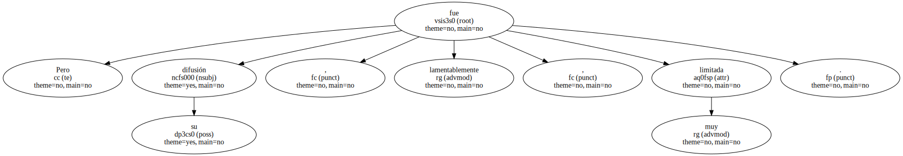- - ¿ Es un cruzado de la diferencia ? - -.
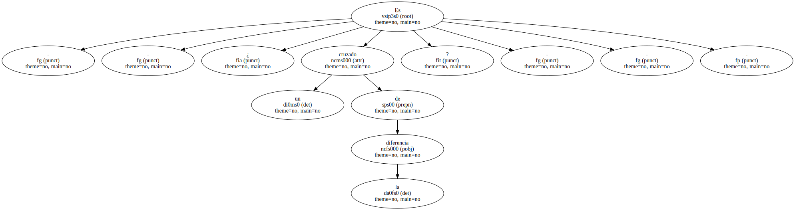No.
Simplemente soy alguien que percibe que hay temas que nadie toca.
Los cuentos tradicionales han pasado por el tamiz de Disney , que es un tamiz fascista.
- - ¿ Cómo de fascista ? - -.
¡ Fíjese en la lectura racista de la Sirenita !.
Presentan al humano como a un ser superior y a la Sirenita , como a un ser minusválido que tiene que vender su voz - - que es como vender su alma - - para tener dos piernas como Dios manda y así poder casarse con el príncipe.
¡ Qué bonito habría sido que el príncipe se cortase las suyas y se lanzase al mar por amor ! - -.
El suyo sale del armario.
- - El mío está inspirado en el primogénito de Jaume II , conde de Barcelona y rey de Valencia.
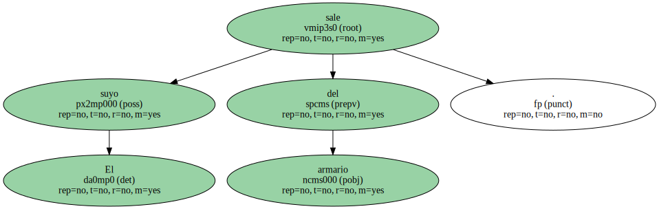Jaume , heredero de la corona , tenía a sus pies a Catalunya , Aragón y Valencia.
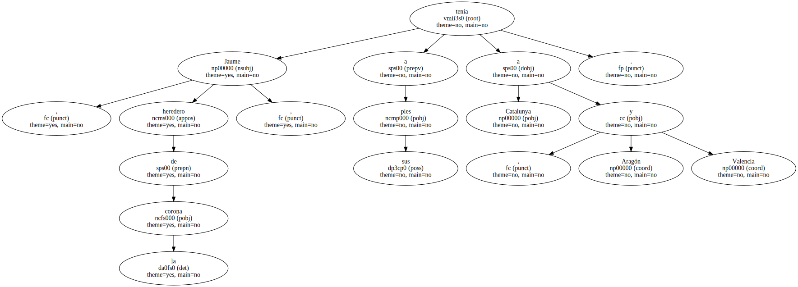Pero dejó a su novia plantada en el altar y se esfumó.
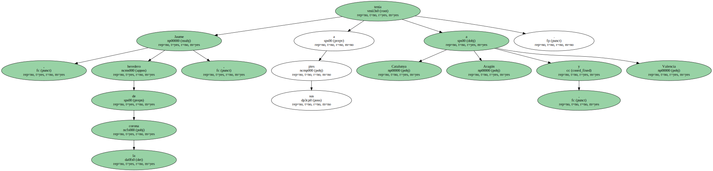Los historiadores corren un tupido velo y afirman que se fue a tierra de moros.
- - Usted concluye que era gay.
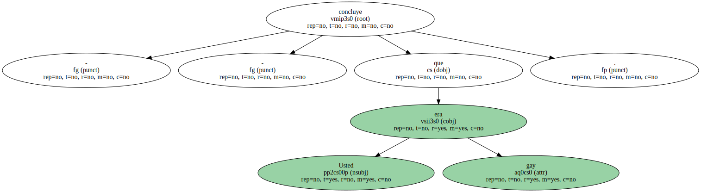- - No quería estar con mujeres.
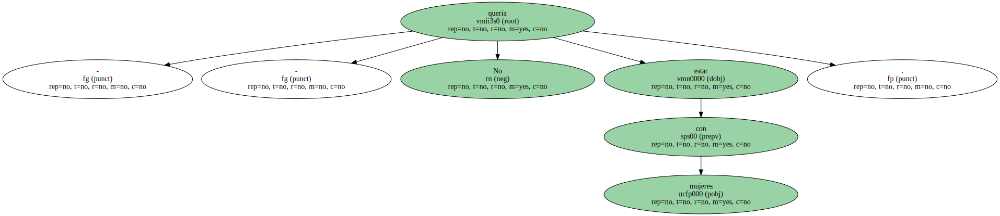En mi cuento , el príncipe se enamora de Karim , el sirviente musulmán.
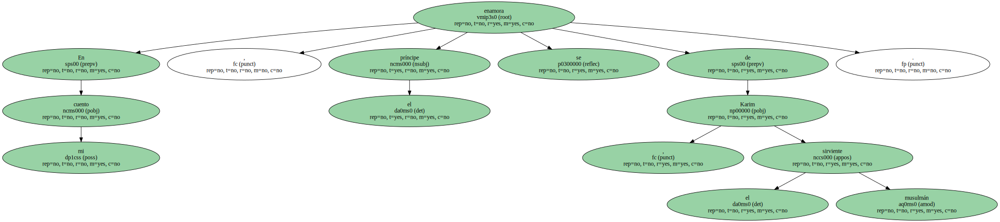Y así la historia rompe no sólo con el concepto tradicional de sexo , sino con los de clase y de religión.
- - ¿ Lo vieron así los editores ? - -.
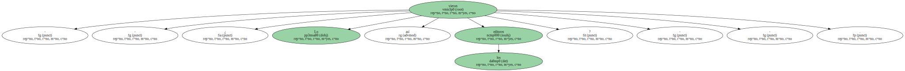No.
Las editoriales de Madrid nos devolvieron las primeras muestras que enviamos diciendo que la historia no tenía ni pies ni cabeza , que era una provocación.

¡ Una provocación !.
Incluso me extraña que en países con un alto potencial gay como EEUU no haya aparecido un producto similar al mío.
- - ¿ A quién se lo recomienda ? - -.
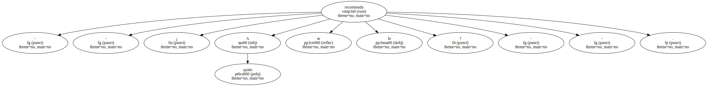A los amantes del arte , porque el cuento es estético.
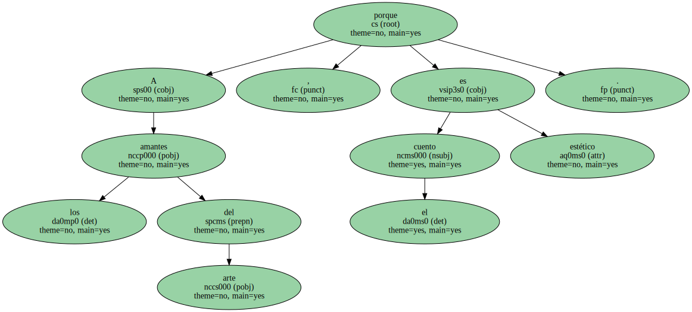A parejas gays , para que expliquen a sus sobrinos que su relación es normal.
E incluso a los inquisidores , para que disfruten sufriendo.
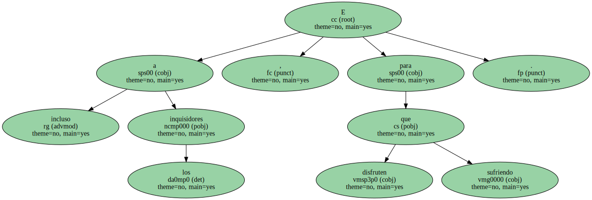- - ¿ Es iconoclasta por valenciano ? - -.
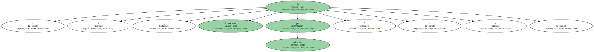¿ Por valenciano ?.
¡ Con el Gobierno que tenemos !.
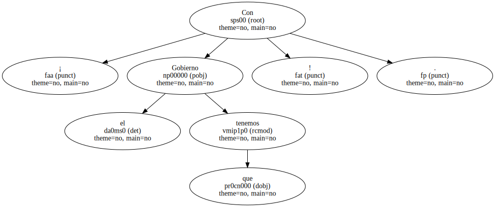Bueno , hay una alcaldesa lesbiana , pero es más dura que una monja de Léfèbvre.
- - ¡ Hombre ! ¡ Así no conseguirá una sola subvención ! - -.

Yo me conformaría con que la Generalitat comprara el cuento , como cualquier otro libro , para que fuera a las bibliotecas públicas.
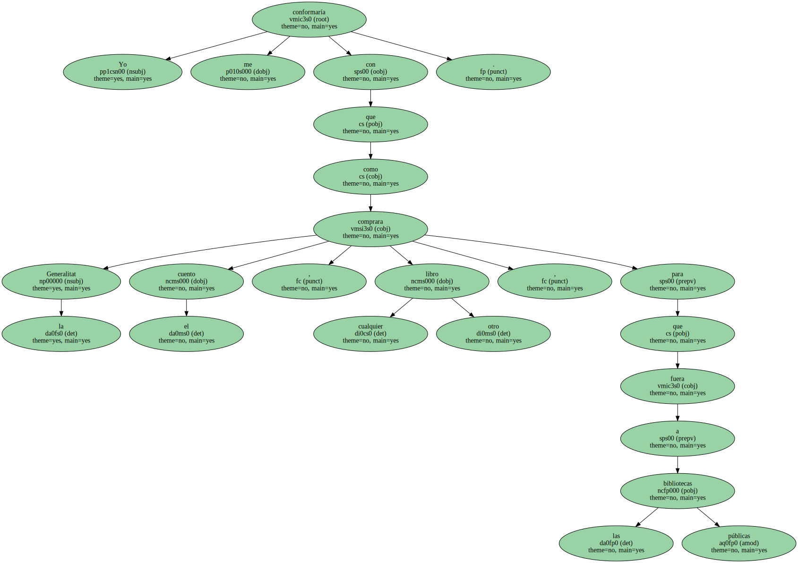- - Usted es profesor universitario.
¿ Se puede saber qué enseña ?.
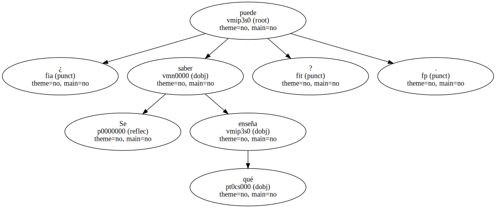- - ( Ríe ) Ciencias Políticas Anarquistas , que están muy olvidadas.
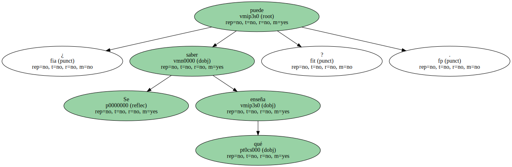Algún día publicaré La política humana según un terrorista cultural.

- - Su familia debe de estar escondida en Tora Bora , como mínimo.
- - ¡ Está escondida en Ruzafa , el corazoncito de Valencia ! los camiones estuvieran parados.
Fecsa tiene que mejorar muchísimo sus instalaciones y tendrá que hacer frente a muchas demandas justas , pero seamos serios y demos al César lo que es del César.